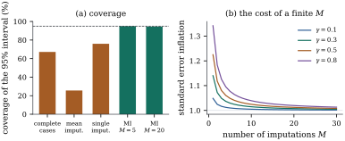

41.5 Multiple imputation
Filling a hole with a plausible value is not wrong; filling it with one plausible value and then forgetting that it was a guess is. Multiple imputation keeps the convenience of a complete rectangular data set and restores the uncertainty a single filling destroys, by filling several times and letting the variation between fillings speak.
41.5.1. The idea
Rubin’s proposal (1978, 1987) has three parts.
- Impute. Draw
- Analyse. Apply the intended
complete-data analysis to each completion, getting
estimates
- Combine. Pool them by Theorem 41.5.1.
Step 1 is the only novelty. Drawing from the posterior predictive distribution means drawing the imputation model’s parameters as well as the values; an imputation that conditions on a point estimate treats it as known, which is one of the ways the procedure fails.
Let
the posterior predictive distribution. Three standard constructions:
(a) Regression imputation with a parameter draw. For a continuous variable modelled as normal given the others, draw
(b) Predictive mean matching. Compute the predicted value for the record with the gap, find the
(c) Chained equations. With gaps in several variables, cycle through them, imputing each in turn from a regression on the current versions of all the others, for several sweeps, and keep the completion at the end of a sweep.
Construction (c), also called fully conditional specification or MICE (van Buuren, 2018), is what makes multiple imputation usable on real files, where dozens of variables have gaps and no one will write a joint density for all of them. It is a Gibbs-like sweep (compare Example (The proficiency study, four ways)) carrying a risk the Gibbs sampler does not: the specified conditionals need not correspond to any joint distribution, and then the sweep has no stationary distribution and the result depends on the order of the variables. The dependence is usually slight, and the flexibility is worth the untidiness, but it should be known.
41.5.2. Rubin’s rules
Let
Let
Then, with all expectations conditional on
(a) (Decomposition.)
(b) (Total variance.)
is unbiased for the variance of
(c) (Degrees of freedom.) treating
and the interval
(d) (Efficiency.) write
Proof. Throughout, condition on
(a) The conditional variance decomposition applied to
(b)
(c) Under the stated approximation
(d) By (b) the target of
Taking square roots gives the inflation factor.
Remark (What the proof assumes).
The calibration Eq. 41.5.2 is a
Bayesian statement: the complete-data analysis behaves
as a posterior mean and variance would. Rubin’s rules
are therefore exactly right when imputation and analysis
come from the same joint model, and
approximately right otherwise. The degrees of freedom in
part (c) can exceed the complete-data degrees of
freedom, absurdly, when
Idea. The between-imputation
variance
41.5.3. How many imputations
Part (d) is why the classical advice was “three to
five imputations”. With
The advice has shifted upward since, for two reasons
the theorem does not address. The degrees of freedom Eq. 41.5.5 grow like
41.5.4. Coverage in practice
Take
Table
41.5.1. Five analyses of the same MAR problem.
The estimand is
| analysis | bias | mean se | sd | coverage |
|---|---|---|---|---|
| complete cases | ||||
| mean imputation | ||||
| single imputation | ||||
| multiple imputation, |
||||
| multiple imputation, |
Each row fails in its own way. The complete cases are
biased, the missingness depending on the response. Mean
imputation is far worse, and its reported standard error
is larger than its actual spread. A single
proper imputation removes the bias but reports a
standard error three fifths of the truth, and covers

import numpy as np
n = 200
rho = 0.5
beta_true = np.array([1.0, 0.5, 0.6]) # intercept, x1, x2
def make_data(rng):
x1 = rng.normal(size=n)
x2 = rho * x1 + np.sqrt(1 - rho**2) * rng.normal(size=n)
y = beta_true[0] + beta_true[1] * x1 + beta_true[2] * x2 + rng.normal(size=n)
eta = -0.3 + 0.8 * x1 + 2.0 * (y - y.mean()) # depends on observed values only: MAR
seen = rng.uniform(size=n) > 1 / (1 + np.exp(-eta))
return x1, x2, y, seen
def fit(X, y):
"""Least squares with the coefficient of x2 and its squared standard error."""
b, *_ = np.linalg.lstsq(X, y, rcond=None)
dof = len(y) - X.shape[1]
s2 = np.sum((y - X @ b) ** 2) / dof
v = s2 * np.linalg.inv(X.T @ X)[2, 2]
return b[2], v, dof
def impute_once(x1, x2, y, seen, rng):
"""One draw from the posterior predictive distribution of the missing x2."""
Z = np.column_stack([np.ones(n), x1, y]) # imputation model: x2 on x1 and y
Zo, k = Z[seen], int(seen.sum())
g, *_ = np.linalg.lstsq(Zo, x2[seen], rcond=None)
sse = float(np.sum((x2[seen] - Zo @ g) ** 2))
s2_star = sse / rng.chisquare(k - Z.shape[1]) # draw the variance ...
cov = s2_star * np.linalg.inv(Zo.T @ Zo)
g_star = rng.multivariate_normal(g, cov) # ... then the coefficients
draw = Z @ g_star + np.sqrt(s2_star) * rng.normal(size=n)
return np.where(seen, x2, draw) # observed values are kept
def rubin(estimates, variances):
"""Combine M analyses: the average, the total variance and the degrees of freedom."""
M = len(estimates)
q_bar, u_bar = np.mean(estimates), np.mean(variances)
b = np.var(estimates, ddof=1)
total = u_bar + (1 + 1 / M) * b
gamma = (1 + 1 / M) * b / total # fraction of missing information
nu = (M - 1) / gamma**2
return q_bar, total, nu
demo_rng = np.random.default_rng(4105)
x1d, x2d, yd, seend = make_data(demo_rng) # one data set, x2 missing at random
qs, us = [], []
for _ in range(5): # M = 5 completions of it
xi = impute_once(x1d, x2d, yd, seend, demo_rng)
qi, ui, _ = fit(np.column_stack([np.ones(n), x1d, xi]), yd)
qs.append(qi)
us.append(ui)
q_bar, total, nu = rubin(qs, us)
print(f"M = 5: estimate {q_bar:.3f}, total variance {total:.4f}, "
f"degrees of freedom {nu:.1f}")Chained equations handle gaps in more than one
variable: ten sweeps of the two conditional regressions
below recover the coefficient of
rho = 0.5
beta_true = np.array([1.0, 0.5, 0.6]) # intercept, x1, x2
def make_data(rng):
x1 = rng.normal(size=n)
x2 = rho * x1 + np.sqrt(1 - rho**2) * rng.normal(size=n)
y = beta_true[0] + beta_true[1] * x1 + beta_true[2] * x2 + rng.normal(size=n)
eta = -0.3 + 0.8 * x1 + 2.0 * (y - y.mean()) # depends on observed values only: MAR
seen = rng.uniform(size=n) > 1 / (1 + np.exp(-eta))
return x1, x2, y, seen
rng2 = np.random.default_rng(4107)
x1, x2, y, seen2 = make_data(rng2)
seen1 = rng2.uniform(size=n) > 0.25 # x1 now has gaps of its own
x1_work = np.where(seen1, x1, x1[seen1].mean()) # a crude start
x2_work = np.where(seen2, x2, x2[seen2].mean())
for sweep in range(10): # one sweep = one pass over the variables
Z = np.column_stack([np.ones(n), x2_work, y]) # x1 given the others
g, *_ = np.linalg.lstsq(Z[seen1], x1[seen1], rcond=None)
s = np.std(x1[seen1] - Z[seen1] @ g, ddof=3)
x1_work = np.where(seen1, x1, Z @ g + s * rng2.normal(size=n))
Z = np.column_stack([np.ones(n), x1_work, y]) # x2 given the others
g, *_ = np.linalg.lstsq(Z[seen2], x2[seen2], rcond=None)
s = np.std(x2[seen2] - Z[seen2] @ g, ddof=3)
x2_work = np.where(seen2, x2, Z @ g + s * rng2.normal(size=n))
b_chained, *_ = np.linalg.lstsq(np.column_stack([np.ones(n), x1_work, x2_work]), y, rcond=None)
print("after chained equations:", np.round(b_chained, 3))41.5.5. Congeniality
Multiple imputation splits the work between two models: the imputer’s and the analyst’s. Nothing forces them to agree, and Meng (1994) showed that the consequences depend on which way they disagree.
The imputation model omits something the analysis uses. If the analyst fits an interaction and the imputer imputed one of its covariates from a model without it, the imputed values carry no interaction and the analyst’s interaction is biased towards zero. This is the serious failure, and easy to commit: the imputer usually works first, for a whole file, without knowing which analyses will be run.
The imputation model includes something the
analysis does not. Then the imputations are
richer than the analysis needs; estimates are usually
fine and Rubin’s
Meng calls a pair of models congenial when both are implied by a single Bayesian model, and shows that Rubin’s variance estimator is consistent under congeniality and can be biased either way without it. Two rules follow: put into the imputation model every variable the analysis will use, including the response and every transformation and interaction to be fitted; and when imputer and analyst are different people, err towards a rich imputation model.
Warning. Omitting the response from the imputation model is the single commonest mistake. It looks cautious — “I do not want to build the answer into the data” — and it is exactly backwards: it imputes covariates as though they were unrelated to the response, which biases every coefficient towards zero. The response belongs in the imputation model.
41.5.6. Exercises
A. Check your understanding
Set
Solution. With
From Eq. 41.5.5, compute
Solution. Equation Eq. 41.5.5 gives
B. Practice
Construct a simulation in which the analysis fits
C. Going deeper
Show that when the imputation model and the analysis
model are the same Bayesian model,